Design
Figma
規劃 UI、Design System、Prototype 與跨部門設計溝通。
大家好我是Andy
UI Designer / Frontend Engineer
Frontend / UI Design / Creative Coding
具備 UI 設計、視覺設計、網頁設計與前端開發經驗，熟悉 Photoshop、Illustrator、Adobe XD、Figma、Sketch 等設計工具，能進行介面規劃、視覺設計與網站版面製作。具備 React、Next.js、Vue／Nuxt 等前端框架實務經驗，能執行切版、元件開發、互動功能製作與 API 串接。另具備 Node.js、PHP、MySQL 基礎開發與資料庫應用能力，並善用 GPT、CodeX 等 AI 工具提升開發與除錯效率，同時持續研究 MCP 串接 Figma 與 CodeX，優化設計轉前端切版流程

Toolbox
規劃 UI、Design System、Prototype 與跨部門設計溝通。
製作品牌視覺、向量圖形、icon 與平面設計素材。
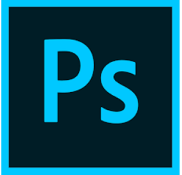
處理影像合成、修圖、活動視覺與網站圖像素材。
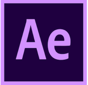
製作動態視覺、介面動效概念與影音特效素材。
剪輯影片內容，整理作品展示、活動紀錄與社群素材。
設計介面稿、元件樣式與早期產品視覺提案。

運用GPT協助程式問題排查、內容生成與開發流程優化
使用xAI輔助資料整理、問題分析與設計發想應用

使用codeX輔助程式撰寫開發功能、問題除錯
使用Builder.io協助頁面內容編輯、版型建置與前端視覺呈現優化
運用UX Pilot輔助介面發想、使用流程規劃與設計靈感整理
建立清楚語意結構，讓內容、SEO 與後續樣式維護更穩定。
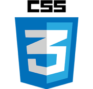
製作 RWD、動畫、版面系統與符合品牌感的視覺細節。
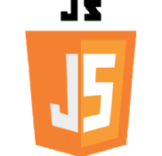
處理互動、資料流程與前端邏輯，讓介面更有操作感。
用元件化方式建立可維護、可重用的前端介面。
開發系統平台、表單流程與中大型互動頁面。

進行前端頁面開發、元件維護與互動功能整合。
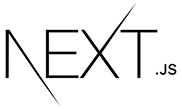
建立具備路由、SEO 與前後端整合能力的 React 網站。
透過型別提升專案可讀性，減少維護與協作時的錯誤。
處理 API、資料串接與後端邏輯，支援前後端流程整合。
開發網站功能、後台流程與既有系統維護需求。
規劃資料表、查詢資料與支援網站後台資料管理。
使用文件式資料結構，處理彈性資料與快速原型需求。
Ability
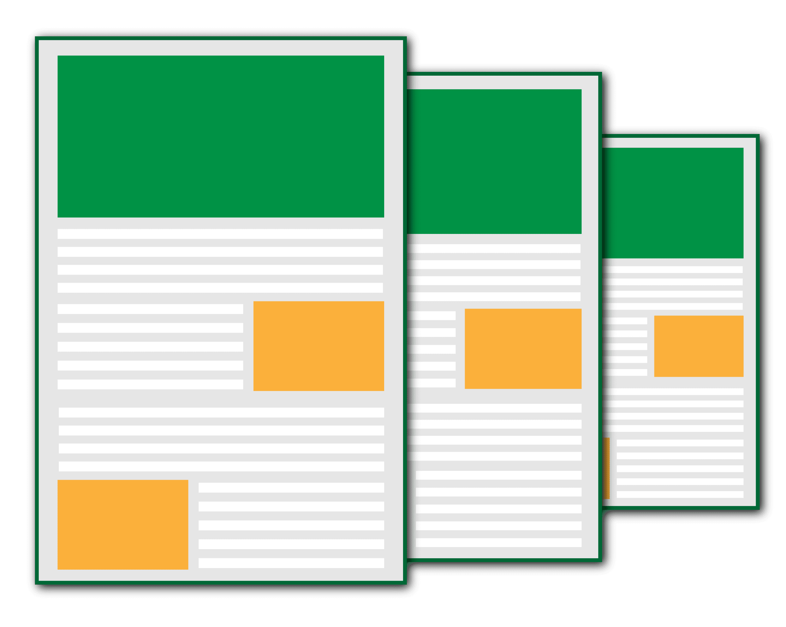
擅長平面排版、品牌識別與活動視覺設計，能整理資訊並轉化成清楚的視覺表現。
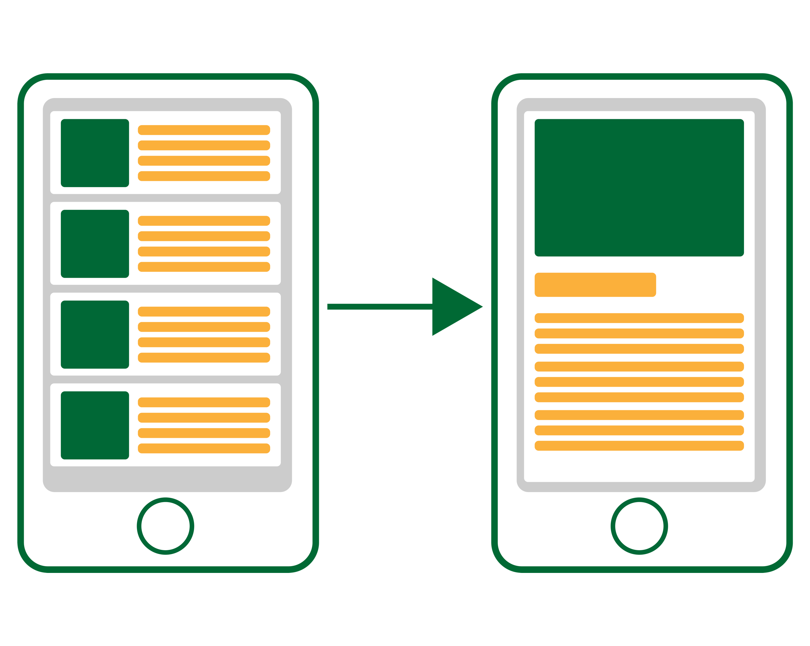
規劃介面流程、互動狀態與操作路徑，讓設計在開發前就能被檢查與溝通。
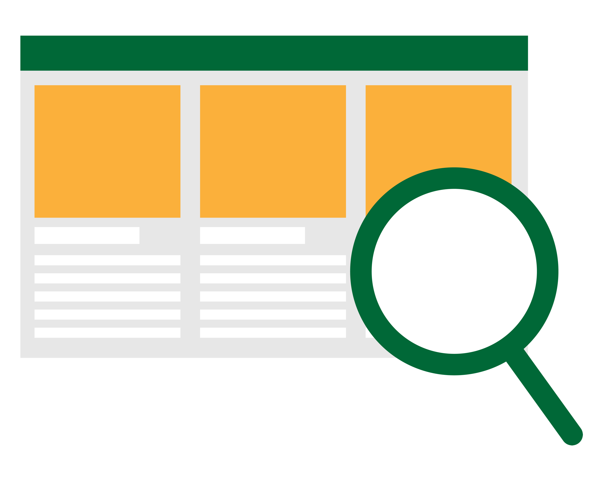
理解網站曝光與內容結構，能從標題、語意與頁面架構提升搜尋與閱讀表現。
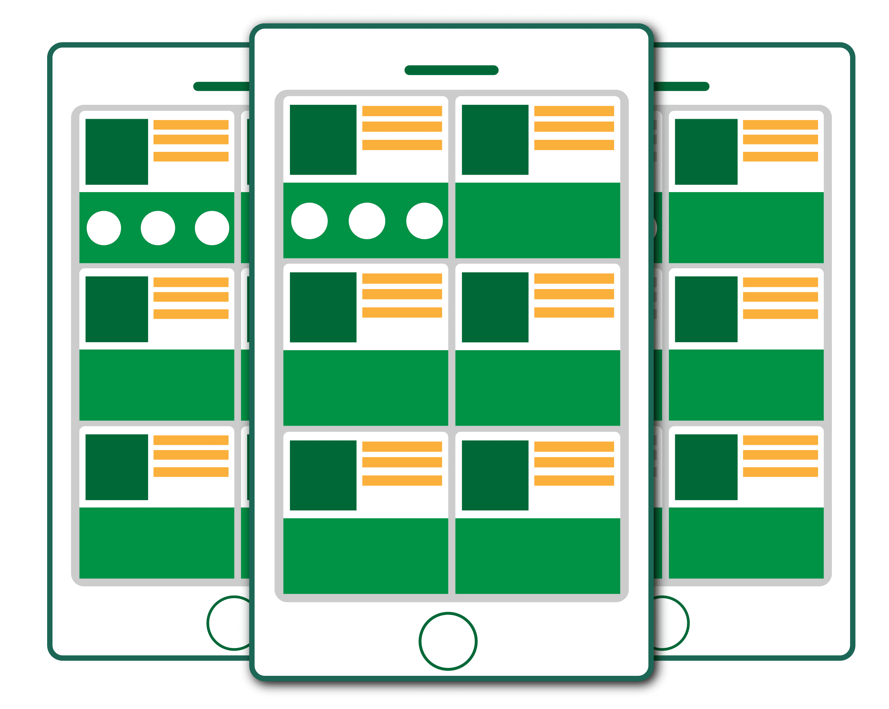
熟悉產品開發流程與設計思考，能建立一致、易讀且可操作的介面規則。
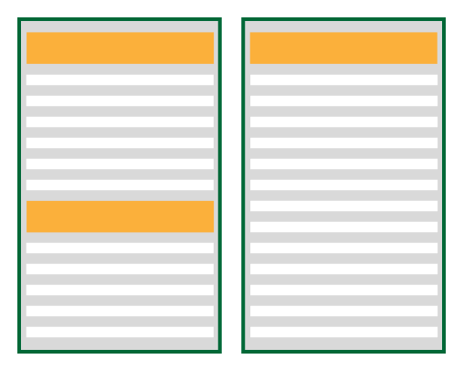
理解資料欄位、後台流程與資訊呈現，能協助把資料需求整理成可用介面。
擅長網頁視覺排版、RWD 與前端語法撰寫，能兼顧設計完成度與實作可行性。
Selected Works
 01
01
規劃水果瓶包裝視覺設計
使用Illustrator製作包裝圖像
使用Photoshop進行影像修圖
完成印刷完稿與品質確認
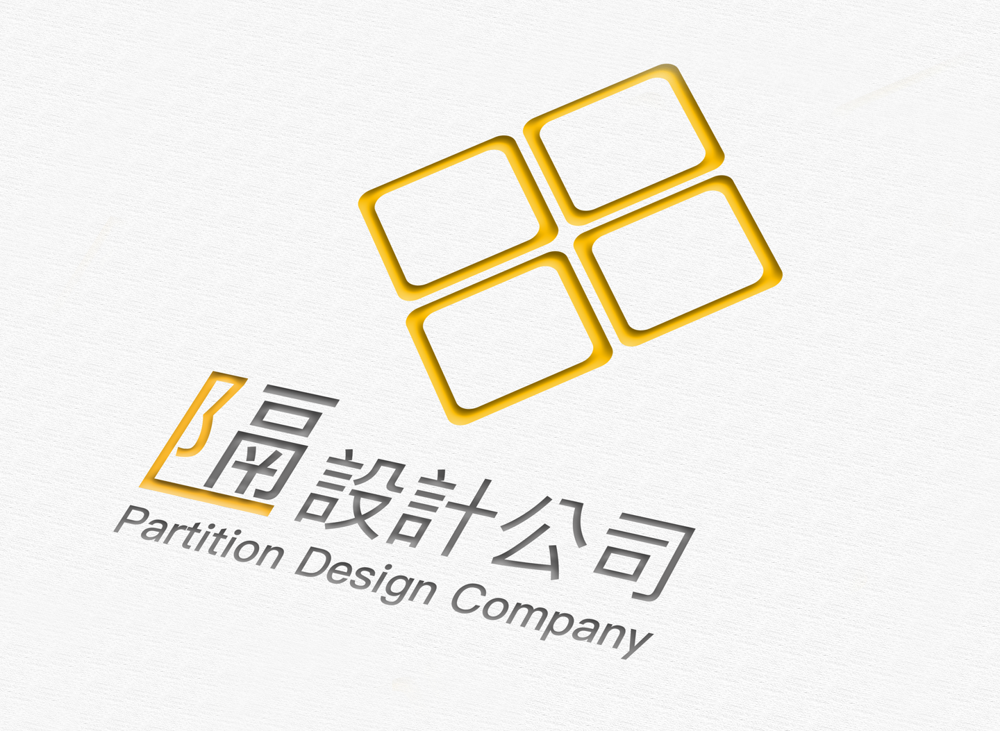
02規劃品牌識別與標誌設計方向
使用Illustrator設計品牌標誌
優化字體編排與色彩配置
建立Logo應用與輸出規範
 03
03
設計日式刺身餐廳識別標誌
建立品牌視覺與色彩規範
使用Illustrator繪製向量圖
使用Photoshop完成提案圖
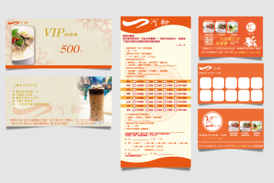
04規劃越式餐廳宣傳物料
設計名片與集點卡版型
製作問卷視覺與版面編排
運用AI與PS完成設計
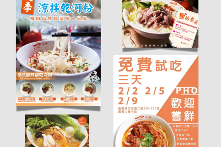
05設計越式餐廳宣傳海報
製作社群粉絲專頁素材
使用Illustrator編排設計
使用Photoshop修圖優化
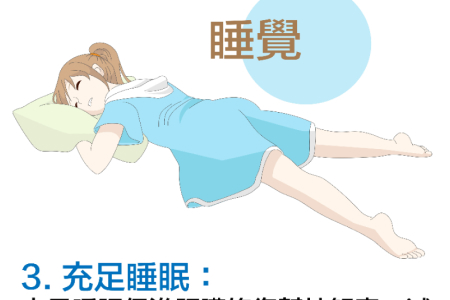
06規劃口臭治療衛教流程
規劃治療步驟視覺化
提升資訊閱讀與理解性
使用Illustrator製作完稿
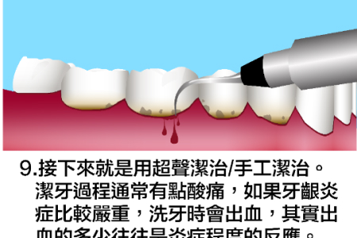
07規劃洗牙治療衛教流程
設計資訊圖表與版面
提升資訊傳達易讀性
使用Illustrator製作完稿
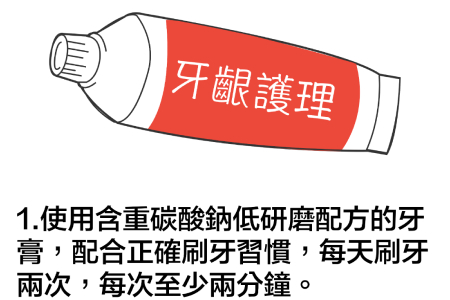
08規劃牙齦流血治療流程
設計衛教圖表與版面
提升醫療資訊易讀性
使用Illustrator製作完稿
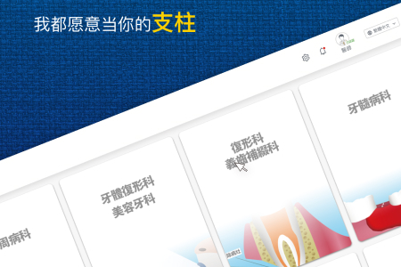
09規劃衛教系統宣傳視覺
規劃視覺版面與資訊
使用Illustrator繪製圖像
使用Photoshop修飾影像
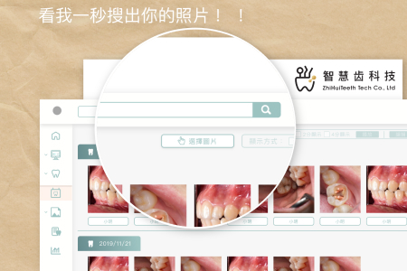
10設計牙齒紀錄系統宣傳圖
規劃系統推廣視覺素材
使用Illustrator製作設計
使用Photoshop優化影像
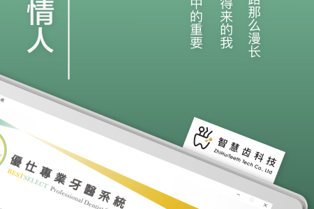
11設計牙醫病歷系統宣傳圖
規劃醫療資訊視覺呈現
建立系統推廣宣傳素材
使用AI與PS完成設計
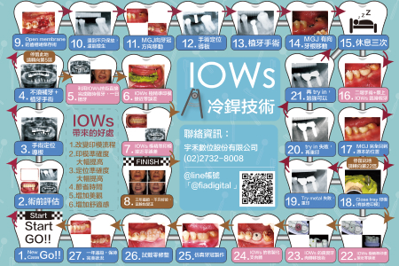
12規劃牙醫衛教宣傳內容
設計DM版面與視覺元素
使用Illustrator製作設計
使用Photoshop修飾影像
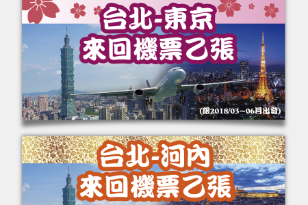
13設計尾牙活動票券版面
規劃活動主題視覺風格
製作票券圖像與資訊欄
使用AI與PS完成設計
設計萬聖節主題Logo
建立節慶視覺識別元素
調整字體與圖形配置
使用AI與PS完成設計
設計聖誕節主題標誌
規劃節慶品牌視覺風格
使用Illustrator繪製圖像
使用Photoshop修飾效果
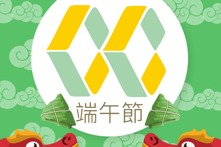
16設計端午節主題標誌
規劃節慶品牌視覺風格
使用Illustrator繪製圖像
使用Photoshop修飾效果
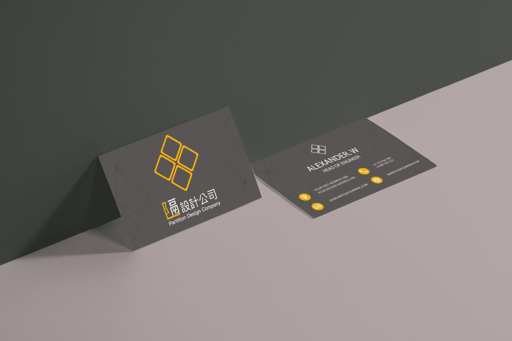
17設計室內設計品牌名片
建立專業識別視覺風格
規劃黑底版面與排版
使用AI與PS完成設計
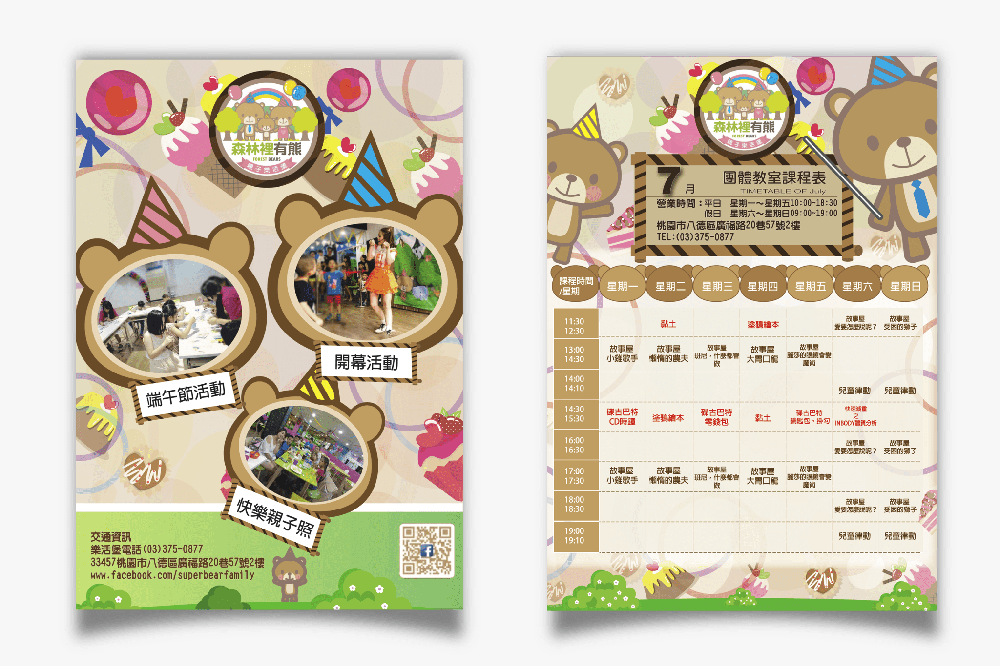
18設計幼稚園課程時間表
規劃童趣繽紛視覺風格
規劃課程資訊與編排
使用Illustrator完成設計
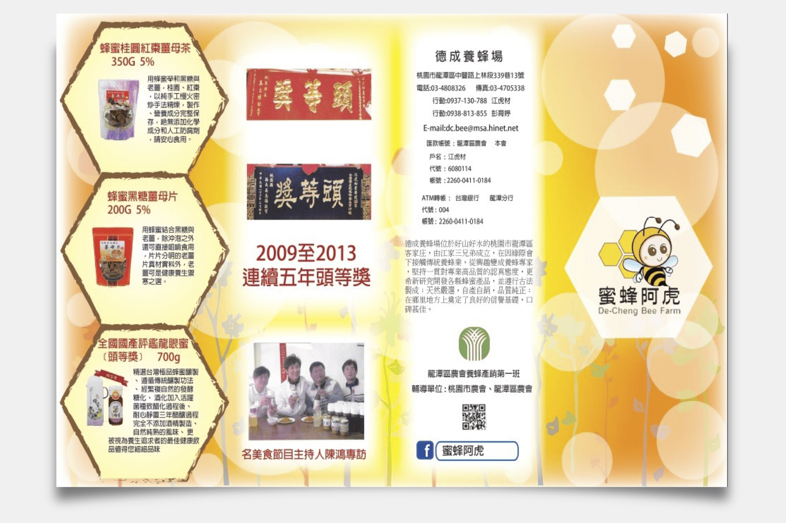
19設計蜂蜜品牌宣傳DM
規劃童趣繽紛視覺風格
運用蜂蜜色系發想設計
使用Illustrator完成設計
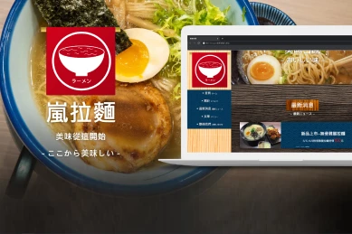
01設計日式拉麵店官方網站視覺介面
結合深色木質風格與日式品牌元素
規劃網站版面架構與使用者體驗
使用Illustrator與Adobe XD製作設計
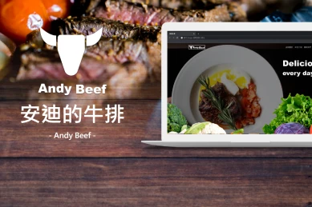
02規劃牛排餐廳品牌網站介面
結合食材元素與動態視覺設計
設計首頁滾動特效與版面配置
使用Illustrator與Adobe XD製作設計
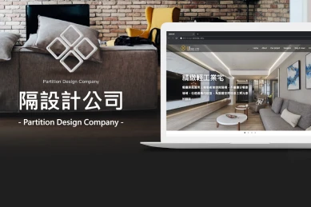
03規劃室內設計公司網站介面
採用文青簡約風格規劃視覺
建立品牌形象與版面配置
使用Illustrator與Adobe XD製作設計
規劃麵包店品牌網站視覺設計
結合視差滾動與文青風格元素
設計網站架構與版面配置
使用Illustrator、XD與Photoshop製作
 05
05
設計運動社交主題App介面
採用藍白色系打造簡約風格
規劃運動活動搜尋與地圖功能
使用Illustrator與Adobe XD製作設計
 06
06
規劃3C電商App介面與操作流程
採用簡約風格凸顯產品展示效果
規劃商品分類與會員集點功能
使用Illustrator、XD製作Prototype
 07
07
規劃室內設計App UI/UX使用流程
規劃家具分類與室內風格專區
設計Wireframe與介面架構規劃
使用Illustrator、Sketch與PS完成
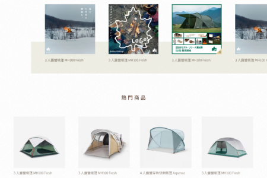
08規劃露營電商網站UI介面設計
採用日系簡約風格與大地色系
設計首頁、商品頁與購物流程
使用Figma完成介面規劃與排版
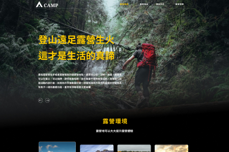
09規劃登山主題網站UI介面設計
採用森林暗色系塑造品牌風格
設計網站宣傳頁面與視覺呈現
使用Figma完成介面排版設計
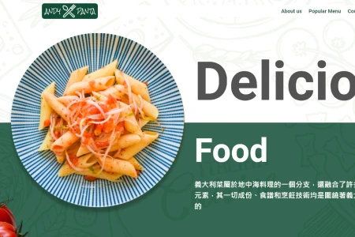
10設計義大利麵餐廳網站介面
結合食材元素強化品牌特色
規劃宣傳頁面與資訊架構配置
使用Figma完成介面排版設計
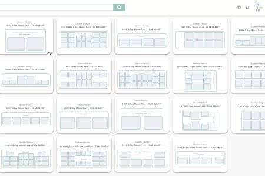
11設計牙醫系統檔案上傳操作介面
規劃病患牙齒狀態檢視頁面
設計X-Ray影像資訊呈現版面
建立牙齒分類與狀態管理介面
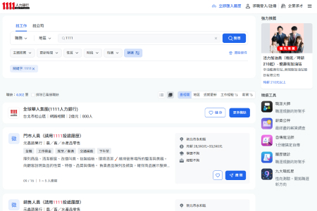
01負責1111搜尋頁面前端與各瀏覽器功能開發
使用HTML建構SEO友善網站架構與語意化標籤
運用SCSS模組化開發、RWD與介面優化
使用Git版控協作並整合JavaScript與Bootstrap功能
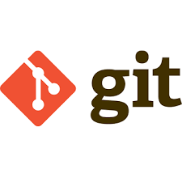
負責1111找工作首頁前端與各瀏覽器功能開發
使用HTML建構SEO友善網站架構與語意化標籤
運用SCSS、RWD及SwiperJS打造輪播與互動介面
使用Git版控協作並整合JavaScript與Bootstrap功能
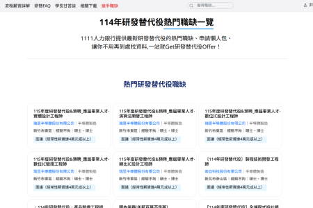
03負責1111替代役找工作專區前端開發與各瀏覽器功能開發
使用HTML建構SEO友善網站架構與語意化標籤
運用SCSS、RWD及SwiperJS打造互動式介面
使用Git版控協作並整合JavaScript與Bootstrap功能
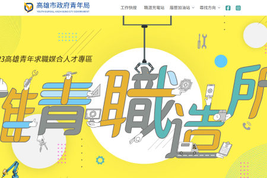
04負責1111高青局專區網站前端開發與各瀏覽器功能開發
使用HTML建構SEO友善網站架構與語意化標籤
運用Vue元件化開發、SCSS及RWD設計
使用Git版控協作並整合SwiperJS與Bootstrap
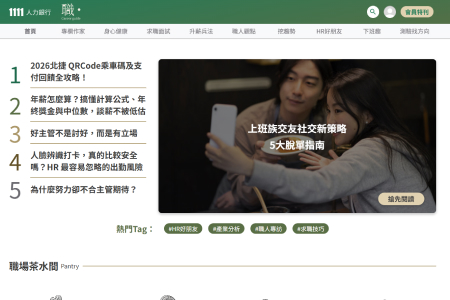
05負責1111職典網站前端功能開發與各瀏覽器功能開發
使用Vue3與Nuxt3進行元件開發與調整
運用SCSS建置RWD響應式網站介面
使用Git版控協作並整合Bootstrap元件
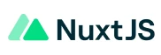
負責1111大學網網站前端與各瀏覽器功能開發
使用HTML建構SEO友善網站架構與語意化標籤
運用Tailwind開發RWD響應式網站介面
使用Git版控協作並開發JavaScript功能
負責1111企業職缺頁面前端開發與各瀏覽器功能開發
使用HTML、SCSS進行元件化與RWD
開發與維護JavaScript互動功能及介面
透過Git版控協作整合Bootstrap元件
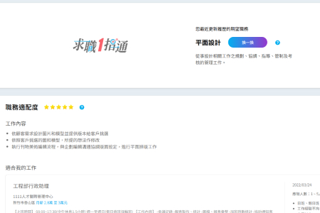
08參與1111求職1指通網站前端與各瀏覽器功能開發
使用SCSS進行響應式版面與樣式管理
維護JavaScript功能並優化使用者體驗
透過Git版控協作整合Bootstrap元件
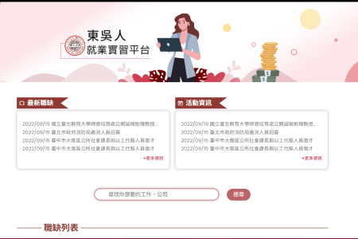
09負責1111東吳人就業平台前端開發與各瀏覽器功能開發
使用HTML與SCSS建置RWD響應式網站介面
維護JavaScript功能並優化使用者體驗
透過Git版控協作整合Bootstrap元件
負責1111求職神器網站前端開發與各瀏覽器功能開發
使用HTML與SCSS建置RWD響應式網站介面
開發與維護JavaScript功能及Bootstrap元件
使用Git版控協作提升專案開發效率
負責1111招募內部系統前端功能開發與各瀏覽器功能開發
使用HTML與SCSS建置RWD響應式網站介面
開發JavaScript功能並整合Bootstrap元件
使用Git版控協作及維護ASP CSHTML頁面

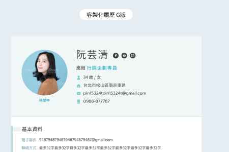
11負責1111客製化履歷系統前端開發與各瀏覽器功能開發
使用HTML與SCSS建置RWD響應式網站介面
優化列印模式CSS並解決Print版面跑版問題
透過Git版控協作整合Bootstrap元件
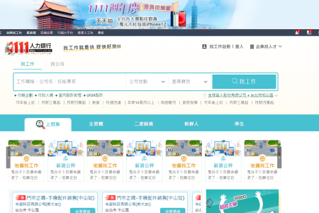
12負責1111首頁改版前端開發與各瀏覽器功能開發
使用HTML與SCSS建置RWD響應式網站介面
開發與維護JavaScript功能及Bootstrap元件
使用Git版控協作提升專案開發效率
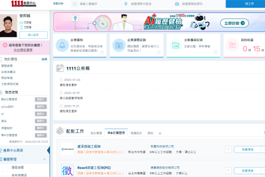
13負責1111會員中心內部頁面前端開發與各瀏覽器功能開發
使用HTML、SCSS進行元件化與RWD
開發與維護JavaScript互動功能及Bootstrap元件
使用Git版控並調整ASP CsHtml頁面內容
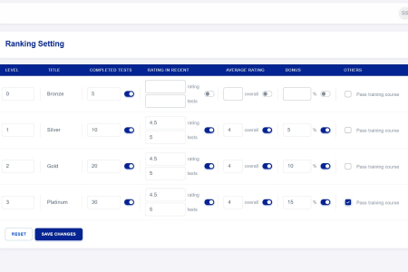
14負責會員等級設定後台功能開發與維護
使用React、Next.js與Material UI建置介面
串接API進行資料查詢與設定更新功能
整合MySQL資料庫並使用Git版控協作
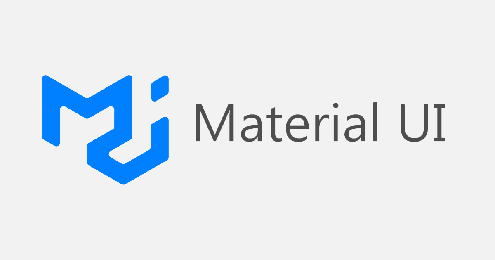
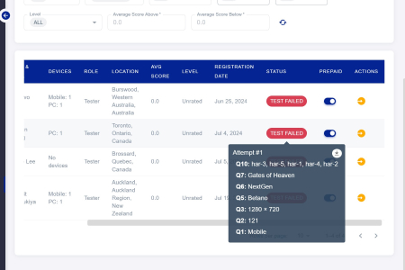
15負責會員錯誤內容下載功能開發與維護
使用React、Next.js與Material UI建置介面
串接API取得資料並轉換下載JSON檔案
整合MySQL資料庫並使用Git版控協作
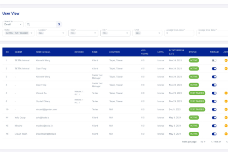
16負責會員資料篩選功能開發與維護
使用React、Next.js與Material UI建置介面
串接GET API取得資料並實作篩選功能
整合MySQL資料庫並使用Git版控協作
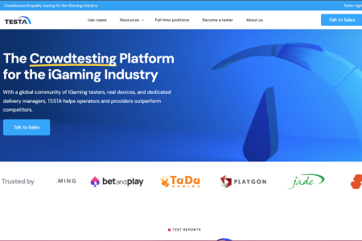
17負責Testa WordPress網站維護與優化
安裝並設定SEO與滾動效果相關外掛
排除網站功能異常與版面顯示問題
新增外掛功能並進行後續測試調整
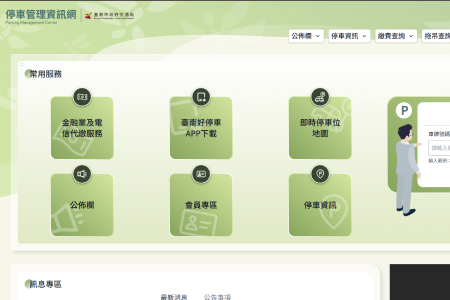
18參與臺南市停車營運管理系統TypeScript建置介面開發專案
使用React與Next.js建置管理操作介面及Tailwind樣式
串接登入驗證、會員管理及表單API
連接MySQL資料庫並透過Git協作開發
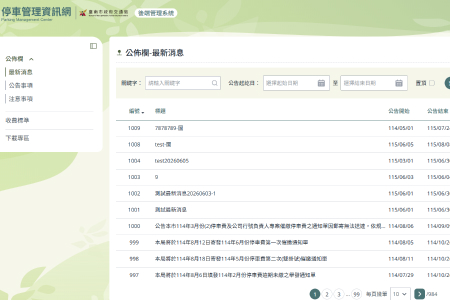
19負責臺南市停車營運管理後台系統TypeScript建置介面開發專案
使用React、Next.js與Tailwind建置管理介面
串接登入驗證、CRUD、檔案上傳與編輯器功能
整合前後台資料串接、MySQL與Git版控
負責基隆路口防護系統後台TypeScript建置介面開發專案
使用Angular建置管理介面與功能模組
整合OpenLayers地圖、即時影像與圖表功能
串接API、MySQL資料庫並使用Git版控
製作泡芙購物網站前後台功能開發
使用Vue3與Vite建置網站介面與功能
開發商品、訂單CRUD及產品上傳功能
整合前後台資料串接並使用Git版控
製作Netflix影音平台前後端功能開發
使用React、Vite與Tailwind建置網站介面
串接TMDB資料並開發登入註冊功能
使用Node.js與MongoDB建置後端服務
負責露營電商平台前後端功能開發與維護
使用React、Next.js與Bootstrap建置介面
開發優惠券、首頁資料與搜尋功能模組
使用Node.js、MySQL實作CRUD資料串接
開發React Native跨平台備忘錄應用程式
使用Expo建置iOS與Android應用環境
設計備忘錄資料管理與操作流程
實作完整CRUD功能提升資料管理效率
製作TodoList系統前後端功能開發
使用React與Vite建置操作介面
使用Python Flask開發RESTful API服務
整合Flask-SQLAlchemy進行資料庫管理

參與購物網站後台管理系統開發專案
使用PHP開發後台操作介面與功能
實作CRUD功能完成資料管理流程
整合MySQL資料庫進行資料存取
製作手錶電商網站前端介面開發
使用Vue與Nuxt建置商品展示頁面
使用SCSS進行響應式版面設計與維護
整合JavaScript功能及Bootstrap元件
製作義大利麵品牌網站前端開發
使用Vue與Nuxt建置形象網站介面
運用SCSS開發RWD響應式網站版型
整合JavaScript功能及Bootstrap元件
製作牙醫形象前端開發
使用Vue與Nuxt建置形象網站介面
運用SCSS開發RWD響應式網站版型
整合Tailwind元件開發
 30
30
負責Baker麵包店形象網頁前端開發
運用SCSS開發RWD響應式網站版型
使用rellaxJS視差滾動效果顯示
 31
31
負責隔設計公司形象網頁前端開發
運用CSS開發RWD響應式網站版型
使用jquery錨點滾動功能
Owl Carousel輪播外掛效果
 32
32
負責嵐拉麵形象網頁前端開發
運用CSS開發RWD響應式網站版型
使用jquery錨點滾動功能
負責宇禾數位企業形象網站前端開發
使用HTML與SCSS建置RWD響應式介面
整合Bootstrap元件提升開發效率
規劃SEO關鍵字與網站Meta資訊優化
負責香草蛋糕官網形象網站前端開發
使用HTML與SCSS建置RWD響應式介面
整合Bootstrap元件提升開發效率
負責高遠新村官網形象網站前端開發
使用HTML與SCSS建置RWD響應式介面
整合Bootstrap元件提升開發效率
負責貨櫃達人官網形象網站前端開發
使用HTML與SCSS建置RWD響應式介面
整合Bootstrap元件提升開發效率
負責韃靼設計工程官網形象網站前端開發
使用HTML與SCSS建置RWD響應式介面
整合Bootstrap元件提升開發效率
負責Dr.KJ康健博士官網形象網站前端開發
使用HTML與SCSS建置RWD響應式介面
整合Bootstrap元件提升開發效率
HTML前端開發撰寫
怪物與人物跟場景設計
撰寫canvas撰寫功能
使用Phaserjs完成遊戲執行
HTML前端開發撰寫
撰寫canvas撰寫功能
{kind=link}
{kind=link}
{kind=link}
{kind=link}
{kind=link}
{kind=link}
{kind=link}
{kind=link}
{kind=link}
{kind=link}
{kind=link}
{kind=link}
{kind=link}
{kind=link}
{kind=link}
{kind=link}
{kind=link}
{kind=link}
{kind=link}
{kind=link}
{kind=link}
{kind=link}
{kind=link}
{kind=link}
{kind=link}
{kind=link}
{kind=link}
{kind=link}
{kind=link}
{kind=link}
{kind=link}
{kind=link}
{kind=link}
{kind=link}
{kind=link}
{kind=link}
{kind=link}
{kind=link}
{kind=link}
{kind=link}
{kind=link}
{kind=link}
{kind=link}
{kind=link}
{kind=link}
{kind=link}
{kind=link}
{kind=link}
{kind=link}
{kind=link}
{kind=link}
{kind=link}
{kind=link}
{kind=link}
{kind=link}
{kind=link}
{kind=link}
{kind=link}
{kind=link}
{kind=link}
{kind=link}
{kind=link}
{kind=link}
{kind=link}
{kind=link}
{kind=link}
{kind=link}
{kind=link}
{kind=link}
{kind=link}
{kind=link}
{kind=link}
{kind=link}
{kind=link}
{kind=link}
{kind=link}
{kind=link}
{kind=link}
{kind=link}
{kind=link}
{kind=link}
{kind=link}